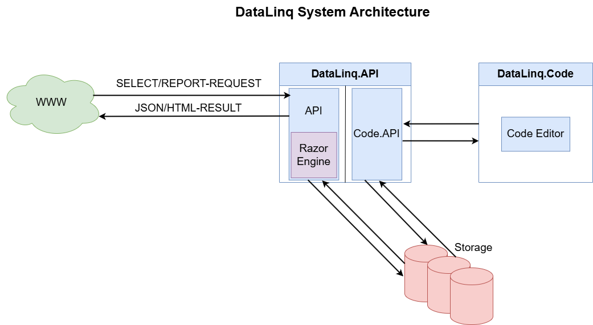

System Architecture of WebGIS DataLinq¶
Overview¶
WebGIS DataLinq is based on a modular architecture that enables efficient querying, processing, and visualization of data. The main components of the system consist of the web access point (WWW), the DataLinq API, the DataLinq Razor Engine, the DataLinq Code API, and the separate DataLinq Code application for managing endpoints, queries, and views.

Architecture Components¶
WWW – External Requests¶
The system receives external requests via the WWW. These requests can be of two different types:
SELECT requests: request raw data in JSON format.
REPORT requests: request formatted HTML reports.
DataLinq API¶
The DataLinq API forms the central element of the architecture and handles the following tasks:
Receiving and processing requests
Providing data sources (endpoints), queries, and views
Storing and managing configurations in the storage system (file-based)
Rendering HTML results via the DataLinq Razor Engine
Storage¶
The storage system is a file store that manages the following configuration data:
Endpoints (data source definitions)
Queries (data queries)
Views (presentation options)
This structure enables simple management and fast reuse of queries and presentations.
DataLinq Razor Engine¶
The DataLinq Razor Engine is integrated into the DataLinq API and handles the processing of REPORT requests. It:
Renders the Razor-based HTML pages
Converts the data from the queries into a formatted presentation
Creates interactive visualizations and reports
DataLinq Code API & DataLinq Code¶
The DataLinq Code API serves as the interface between the DataLinq API and a separate DataLinq Code application, which acts as an editor. These components allow users to adjust the system configuration:
DataLinq Code offers a graphical interface for creating and editing endpoints, queries, and views.
The DataLinq Code API accepts these configuration changes and stores them in the storage system.
Summary of the Data Flow¶
WWW sends SELECT or REPORT requests to the DataLinq API.
The DataLinq API processes the request:
SELECT requests return JSON data.
REPORT requests are rendered by the DataLinq Razor Engine and returned as HTML.
Users manage endpoints, queries, and views via DataLinq Code, with the DataLinq Code API storing these changes.